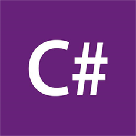

Track Suggester
Track Suggester
, you should study...
Ruby/Rails!

Ruby is ideal for building interactive web applications. It is popular with startups and smaller companies. Bonus: the Rails framework makes many common tasks easier.
CSS/Design!

This front-end language allows you to make things look nice, and create an enjoyable experience for the user.
C#/.NET!
C# is used by bigger, established businesses. It is an older language, but has lately been revitalized by Microsoft's decision to open source the language and surrounding platform.